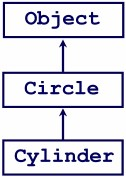
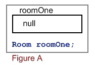
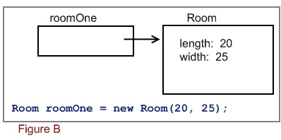
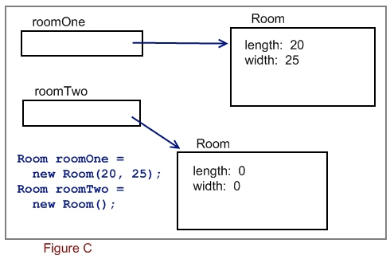
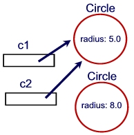

You might recall from an earlier discussion that the equals() and toString() methods are already part of Java. We can now explore exactly where these methods come from. There is a class called Object (in the java.lang package, with classes like String and System) that is the parent class of every class in Java, including the classes you write yourself. This means that your Circle class's parent class is Object. Your shape class hierarchy looks like this:
Open the Java documentation and examine the Object class. You'll see a few methods, including equals() and toString(). You'll also see the finalize() method used to execute code when an object is destroyed .
When we create a new class, we are actually extending the Object class, even though we don't actually type "extends Object" in our class header (some programmers do, but why bother with a waste of typing??). This also means that when you define an equals(), finalize(), and/or toString() method for your class, you're overriding the methods of the Object class!
Because of what we learned earlier about casting parent and child classes, this means you can do things like:
Object o1 = new Circle(2); Object o2 = new Cylinder(3, 1); System.out.println(o1); System.out.println(o2);
Write a program that defines an Object array called shapes with 4 elements. Write the code to prompt the user to create four circles and cylinders (whichever they want - you'll have to ask them!) with user-specified values for radius and height (if applicable). Then loop through the array and display the shapes' information (including area and volume, where applicable).
As mentioned previously, the toString() method is already defined in Java. Therefore, when you add your own toString() method to your classes, it must always be defined as:
public String toString() { ... }
In addition, your method must return a String object. Generally the toString() method returns a string representation of your objects. For example, the toString() method for a Course class might be defined as:
public String toString() {
return courseCode + ": " + courseName;
}
In designing a class, you need to think of what instances of your classes should "look like" as Strings. Then you can define an appropriate toString() method.
When your class has a toString() method, it allows you do print objects to the console using print() or println() in this way:
Circle circleObject = new Circle(); System.out.println(circleObject);
In this example, the println() method will look inside the circle for a toString() definition. If it finds one, it will execute that method, take the String object that method returns, and send that String to the println() method. This will show your toString() method's return value on the console.
If you don't have a toString() in your class, Java will use the default toString() definition. The default toString() method returns a String that consists of the name of the class that the object is an instance of, the @ symbol, and then the objects hash code in hexadecimal form.
For example, if your circle class didn't have a toString(), then the previous code segment might print something like:
Circle@82ba41
 We've said it often - variables that hold objects are not like variables that hold primitive data. Variables that hold objects are object variables or reference variables. The word "reference" is key here. Examine Figure A to the left: This image shows what the object variable "roomOne" looks like in memory after the statement:
RoomType roomOne;
This statement delcares a variable called roomOne that will hold an object based on the RoomType class (an instance of RoomType). Because no object has yet been constructed in this statement, the roomOne object variable contains the value "null". The null value is like a 0 for objects - it means that the variable doesn't have an object yet
Figure B shows what the roomOne variable would look like in memory if you had assigned it a newly constructed Room object instead. The new operator is used to construct new objects. It's referring to the Room() constructor, which is receiving two arguments that will be assigned to the length and width instance variables of the room object being created. The address of the newly constructed room object is then stored in the roomOne variable. The address is a reference to the object in memory, which is why object variables are also called reference variables.
Object variables don't contain objects; rather, they refer to objects in memory. For example, the roomOne variable contains a reference to a Room object in memory. When the object variable contains the null value, as in Figure A, it means that it is not referencing any object in memory.
Figure B shows what happens in memory once the RoomType class is instantiated. This figure represents memory after the statements:
RoomType roomOne = new RoomType(20, 25);
You could also type this as:
RoomType roomOne; roomOne = new RoomType(20, 25);
Here, the variable roomOne is declared and given a new instance of the Room class. In memory, as you can see by Figure B, the RoomType object is instantiated in memory, and its two private instance variables are given the values 20 and 25.
The roomOne variable contains a reference (memory address) to the object in memory. So you can see that the object variable does not actually contain the object; it contains the memory address of the object! This becomes important when you begin working with multiple objects in a program, as we'll see in the next example.
When you create two object variables and assign a different object to each of them, memory will look much like the image in Figure C. In this example, there are 2 reference variables, and each variable is pointing to its own object.
It is possible to have two reference variables pointing to the same object in memory! Try the following program using your Circle class:
01: import java.awt.*;
01:
02: public class TryObjectRef
03: {
04: public static void main(String[] args)
05: {
06: Circle c1 = new Circle(5);
07: System.out.println(c1);
08:
09: Circle c2 = new Circle(8);
10: System.out.println(c2);
11: }
12: }
Line 6 defines a new Circle object for the object variable "c1". A circle has a radius, so we give this circle object a radius of 5.
Line 7 prints the c1 object variable - it's referencing the Circle object, so it will go find that object and print its information. Recall that if a class contains a toString() method, the println() will search for that method, grab the String returned by the method, and use it as the argument to the println() method.
Lines 9 and 10 are similar to 6 and 7 - a new Circle object is created with radius 8. Then this circle's information is displayed on the console.
If you compile and run this program, you should see:
Circle: radius = 5.0 Circle: radius = 8.0
Now go back to your program and add a new line between line 9 and 10:
c2 = c1;
Re-compile your program and run it. You'll now see:
Circle: radius = 5.0 Circle: radius = 5.0
What is happening in the statement c2 = c1;? Recall that object variables contain the memory addresses to the objects in memory. This statement takes the variable c2 and gives it the value in c1. The c1 variable contains the address of the first circle object, so c2 now also gets the address of the first circle object in memory. If we were to draw a diagram similar to Figures 2.7, 2.8 and 2.9, it would look like the image to the left.
The c2 variable was pointing to the second circle object, but then we assigned the value of c1 to c2. This made c2 receive the address of the first circle, so now c2 is pointing to the first circle. Since the second circle has no variable referencing it, Java will eventually delete it from memory. Page 87 of your text explains how Java is extremely efficient at cleansing memory of unused and unreferenced objects. This used to be a huge problem in older object-oriented languages! Java's intelligent garbage collector is responsible for this interesting feature, and we'll discuss this in a later session.
Given what we now know about objects in memory, what do you think occurs when the following program runs?
public class ObjectComp
{
public static void main(String[] args)
{
Circle c1 = new Circle(5);
Circle c2 = new Circle(5);
System.out.println(c1 == c2);
}
}
What do you think will appear on your screen when the program is run? What actually does appear?
The == operator compares to see if the two operands on either side of the operator are of equal value. If we were to compare two integers, such as 5 == 2, we would know that this statement would result in the boolean value false. Similarly, we know that the statement 5 == 5 would result in the boolean value true. When comparing two variables, we know that Java will look at the values inside those variables and compare them. When Java looks inside the variables c1 and c2, it sees memory addresses. It then compares these two memory addresses -- is the memory address in c1 equal to the memory address in c2? In this case, c1 and c2 are referencing two completely different objects in memory, so the memory addresses in the variables are not the same. This is why you see the boolean value false display on the console.
What if you wrote a class and wanted a programmer to be able to compare two objects for equality? For example, we know that the circle object in c1 is equivalent to the circle object in c2, because they have the same radius. We could assume the programmer would just compare the radius of the two circle objects. What if we were working with employee objects; what would make one employee object "equal" to another employee object?
Programmers will often think of this when designing their classes, and so they will often include a method that allows another programmer to compare to objects for equality. The method we generally use is the equals() method. You've used the equals() method before to compare strings (remember, Strings are objects!) so now we'll add our own equals() method to our classes.
The equals() method is part of Java, like the toString() method. the equals() method is public and returns a boolean value of true if two objects are equal, and false if two objects are not equal. The equals method will also require a parameter variable to hold the second object you are comparing, and this parameter should be the same type as the class in which the method is defined. For example, if you are writing an equals() method for your Employee class, your equals method signature would be:
public boolean equals(Employee emp)
You would call this method by invoking it on one employee object, and passing it the other employee object:
boolean sameGuys = someEmployee.equals(someOtherEmployee)
Similarly, the signature for an equals() method in a Time class would be:
public boolean equals(Time t)
You would then invoke this with a statement such as:
System.out.println("time1 same as time2? " +
time1.equals(time2));
Note that this works the same if you are comparing strings. For example, to see if the string variable login is equal to the string value "admin", you would say:
if (login.equals("admin")) {
The code in the equals() method will vary from class to class. As a programmer, you would have to determine what makes two objects equal. For example, what would make two circle objects equal? You could probably test the two radius values:
public boolean equals(Circle c) {
return this.radius == c.getRadius();
}
This equals() method will check the current object's radius (the circle on which this method is being invoked, referred to by this.radius) and the parameter variable's radius (referred to by c.getRadius()) If the two are equal, the return statement will return a true value, otherwise it will return a false value.
What would make two room objects equal? Write an equals() method for the Room class and test it out.
What would make two Time objects equal? Write the equals() method for the Time class.
From earlier sessions you might recall the output of the following statement:
System.out.println(5/2);
What does this statement print? If you were thinking that it printed 2.5, you'd be incorrect!
Recall that the literal values 5 and 2 are integer literals. When you perform mathematical operations using integers, the results are integers. Therefore, 5/2 is integer division, resulting in a value of 2. Even though theoretically we know that 5 divided by 2 is 2.5, the solution 2.5 is a floating-point value and can't be an integer value. Java will "chop off" the decimal portion of the result 2.5 in order to make it a valid integer value.
One of the ways to solve this problem is to cast one of the integers into a floating-point type, such as a double. For example:
int num1 = 5; int num2 = 2; System.out.println((double)num1/num2);
By casting one of the values (in this case, num1) into a double value, we force the result of the operation to be a double value. Whenever a mathematical expression contains a floating-point value, the result is a floating-point value.
Note that this is not the same as saying:
int num1 = 5; int num2 = 2; System.out.println((double)(num1/num2));
Adding the extra pair of brackets around num1/num2 forces the division to be done first, and the cast second. In this example, the order of operations would be:
(double)(5/2)
(double)(2)
Casting the integer value 2 into a double will result in the value 2.0, which is what you'd find the output to be if you executed this set of statements.
Casting objects is often required when working with GUI components (particularly with event handling) and with structures like the ArrayList.
An ArrayList that hasn't been declared using generics syntax can hold any type of object you like. For example:
ArrayList list = new ArrayList(5);
list.add(5); // add an integer
list.add(10.9); // add a double
list.add("hello"); // add a string object
list.add(new Circle(5.5)); // add a circle object
for (int i=0; i<list.size(); i++)
{
System.out.println(list.get(i));
}
In this example, we've added an integer object, double object, String object, and a Circle object. In the loop, we use the get() method of the ArrayList class to retrieve each object and display it on the screen.
Recall that when the print() or println() method receives an object as its argument, it looks in the object's code for a toString() method. When it finds this method, it executes it and prints the resulting String. The integer, double and String objects are all part of Java, and therefore they have a definition for the toString() object. The Circle class was designed by me, and it has been given a toString() method that returns a string in the form "Circle: radius=r", where r is the radius of the circle object.
This works because toString() is also part of Java - it's defined in the Object class. If you tried to access a method that is not already part of the Object class, you might get into some trouble. For example:
ArrayList list = new ArrayList(5);
list.add(new Circle(7));
list.add(new Circle(10.2));
list.add(new Circle(5.5));
for (int i=0; i<list.size(); i++)
{
System.out.print(list.get(i));
System.out.println(" Area: " + list.get(i).getArea());
}
If you compile this code, you'll get the following error:
ArrayListDemo2.java:24: cannot find symbol
symbol : method getArea()
location: class java.lang.Object
System.out.println("Area: " + list.get(i).getArea());
Java is telling you that it can't find a definition for the getArea() method. Why is this? The Circle class has a getArea() method defined in it, so why does it recognize toString() and not getArea()?
Examine the error message more closely. The "location:" part of the message indicates that Java is looking inside the Object class for the getArea() method. This is because when an object gets placed into an ArrayList, Java casts that item into an instance of the Object class (yeah, an Object object!).
Because an ArrayList can contain any kind of object, Java needs a way to identify what kinds of items are in an ArrayList. Rather than having to "remember" all the different class types of all the items in the list, it just turns everything into an Object to make it easier. This means that when you retrieve any kind of item from an ArrayList, you are retrieving it as an Object. If you want to use methods like equals() and toString() on those objects, it's okay because those methods are defined inside the Object class already. However, if you try to use methods that are defined inside the Circle class (or Integer class or Employee class or whatever class the list items originally belonged to), you'll get errors just like the ones displayed earlier.
So what do we do? In our example, we want to display the circle areas, but getArea() is defined in the Circle class and not the Object class. Easy!! We can just tell Java that the list items we are retrieving are really just Circle, and then it will allow us to use the Circle methods. To do this, we cast the list items back into Circle objects:
ArrayList list = new ArrayList(5);
list.add(new Circle(7));
list.add(new Circle(10.2));
list.add(new Circle(5.5));
for (int i=0; i<list.size(); i++)
{
Circle c = (Circle)list.get(i);
System.out.print(c);
System.out.println(" Area: " + c.getArea());
}
What happens if we want to put Circle and Cylinder objects into our ArrayList?
ArrayList list = new ArrayList(5);
list.add(new Circle(7));
list.add(new Cylinder(10.2, 3));
list.add(new Circle(5.5));
list.add(new Cylinder(1, 1));
for (int i=0; i<list.size(); i++)
{
Circle c = (Circle)list.get(i);
System.out.print(c);
System.out.println(" Area: " + c.getArea());
}
If you compile this code, you'll find that it compiles sucessfully, and that it works when executed!
Circle: radius=7.0 Area: 153.93804002589985 Cylinder: radius=10.2 height=3.0 Area: 125684.4377672548 Circle: radius=5.5 Area: 95.03317777109125 Cylinder: radius=1.0 height=1.0 Area: 39.47841760435743
The implicit call to the toString() in the print() method works properly: The circles are displayed with "Circle:" and the radius, and the cylinders are displayed with "Cylinder:" and the radius & height. The area is calculated and displayed properly also!
How does this work? Recall that Cylinder is a child class of Circle. Also recall that the Object class is at the top of the class hierarchy in Java -- every class, even the ones you create, are child classes of Object, either directly or indirectly.
When you're working with objects of different classes that are related via parent/child relationships, you can store references of one kind of object into a variable of a different object variable. For example, it is acceptable to use the statement:
Circle roundShape = new Cylinder(1, 2); System.out.println(roundShape);
Try the statements above; what is the output?
The roundShape object variable is defined to hold a reference to a Circle object, yet we are giving it a Cylinder object instead. Since Cylinder is actually a child class of Circle (in one way, still a Circle object but with some extra features), it is permissable to place a Cylinder object reference into a variable designed to hold a Circle reference. This is actually an implicit cast: You may freely place a child object reference into a variable defined to hold a parent object reference.
Does this work the other way? Try it:
Cylinder can = new Circle(2); System.out.println(can);
What happens when you compile this code? Java will tell you that Cylinder and Circle are incompatible types. You may not implicitly cast down the hierarchy, from a parent object to a child object.
What happens if we modify the first example like this:
Circle roundShape = new Cylinder(1, 2); System.out.println(roundShape); Cylinder can = roundShape; System.out.println(can);
If you compile this code, you'll get the same "incompatible types" error we had earlier. But shouldn't this type of cast be okay? After all, we are taking the object in roundShape, which was a Cylinder to begin with, and putting it into a new Cylinder variable called can! The problem is that the original Cylinder reference was stored in a Circle variable, and we can't take a Circle and put it into a Cylinder with an implicit cast. However, since the object was actually a Cylinder to begin with, we can use an explicit cast to place the reference of roundShape into the Cylinder can variable:
Circle roundShape = new Cylinder(1, 2); System.out.println(roundShape); Cylinder can = (Cylinder)roundShape; System.out.println(can);
The easiest analogy to use in remembering how casting objects with inheritance works is to think of the parent/child relationship in a real family: A parent owns a pair of shoes, and the son/daughter also owns a pair of shoes. A child can easily put on the parent's shoes and walk around -- they might be a bit on the large size, but a child can easily put on his/her parent's shoes. A parent however, being a full-grown adult, can likely not put on a child's pair of shoes -- the shoes would be too small! An adult's food will likely not fit into a small child's shoes. So, a child can fit into a parent's shoes, but a parent can't fit into a child's shoes. With inheritance and casting, a child object can easily fit into a parent object variable, but a parent object can't fit into a child object variable!
If we go back to our example with the ArrayList, we can now understand why the print()/toString() and the getArea() works. When Circle and Cylinder objects are put into the ArrayList, they are implicitly cast into Object's. Object is the parent of Circle, and Circle is the parent of Cylinder. Even though the circles and cylinders are being stored into Object references, they still remember that they are circles and cylinders.
When we use the get() method to retrieve the list items, we are retrieving instances of the Object class. In our loop, we explicitly cast the objects into Circle objects. This obviously works for the objects that were circles to begin with, but it also works with cylinders because Circle is the parent of Cylinder.
To further explore this concept, what if we wanted to also display the volume for the cylinders in our list? A first thought might be to add statements like so:
ArrayList list = new ArrayList(5);
list.add(new Circle(7));
list.add(new Cylinder(10.2, 3));
list.add(new Circle(5.5));
list.add(new Cylinder(1, 1));
for (int i=0; i<list.size(); i++)
{
Circle c = (Circle)list.get(i);
System.out.print(c);
System.out.print(" Area: " + c.getArea());
System.out.println(" Volume: " + c.getVolume());
}
Before you compile this, you'll likely realize that the Circle class doesn't have a definition for getVolume(), and that you'd get an error that Java did not understand the getVolume() method for Circle objects. Indeed, this would be true! The getVolume() method is only defined in cylinders, so we have to find a way to tell Java to only display the volume for Cylinder objects.
To accomplish this, we use the instanceof operator to ask if an object out of the ArrayList is a Circle or a Cylinder. If the item is a Cylinder, we shall also display the volume:
ArrayList list = new ArrayList(5);
list.add(new Circle(7));
list.add(new Cylinder(10.2, 3));
list.add(new Circle(5.5));
list.add(new Cylinder(1, 1));
for (int i=0; i<list.size(); i++)
{
Circle c = (Circle)list.get(i);
System.out.print(c);
System.out.print(" Area: " + c.getArea());
if (c instanceof Cylinder)
{
Cylinder cyl = (Cylinder)c;
System.out.print(" Volume: " + cyl.getVolume());
}
System.out.println();
}
Notice that we have to cast the object into a Cylinder in order to access the getVolume() method, since the variable c is referencing a Circle, with doesn't have getVolume().
In your ArrayList program, write a static method that takes an argument for a Circle or Cylinder and displays information about it (its radius and height if applicable, its area and volume, if applicable). Writing this to display information for only a circle or only a cylinder would be easy, but how do we make it work for both shapes?
Design a Sphere class with the following specifications:
| Class: Sphere extends Circle |
| Data Members: -radius:double |
| Methods: +Sphere() +Sphere(double radius) +getRadius():double +setRadius(double radius):void +getArea():double +getVolume():double +toString():String +equals(Sphere s):boolean |
The surface area of a sphere is 4 * PI * radius2 (4 times circle area) and the volume of a sphere is 4/3 * PI * r3, which could also be written as 4/3 * radius * the circle area.
Modify your array exercise from earlier so that the user can also create Sphere objects. How much code did you have to change? Did you see any areas where you could have originally written the code differently so that it was easier to modify?